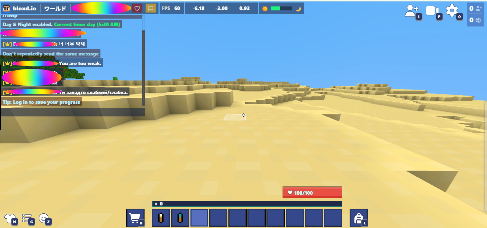

⚠️ 免責事項
⚠️ Warning
個人開発の趣味プロジェクトのため、仕様変更による動作停止やメンテナンス終了の可能性があります。本ソフトウェアの使用によって生じた損害について、作者は一切の責任を負いません。
Since it is developed by individuals as a hobby, development ends when it becomes difficult to maintain. The author will not be responsible for any damage caused by this software.
主な機能
Features
- Bloxd.io内のあらゆる海外チャットを、指定した主要言語へリアルタイム翻訳。
- Real-time translation of any overseas chat in Bloxd.io into your specified primary language.
- Google翻訳APIの上限により、一時的に翻訳制限がかかる場合があります。
- Due to Google Translate API limits, translation limits may be temporarily reached.
導入手順 (開発者モード)How to Install (Developer Mode)
- リポジトリのReleasesから .7zファイルをダウンロード
- Download the .7z file from the repository Releases
- PC上で 7-Zip等のソフトを使いファイルを解凍
- Extract the file on your PC using software like 7-Zip
- ブラウザで
chrome://extensions/を開き デベロッパーモードをオン - Open
chrome://extensions/in your browser and turn on Developer Mode - 解凍したフォルダを画面に ドラッグ＆ドロップ して完了
- Drag and drop the extracted folder onto the screen to complete